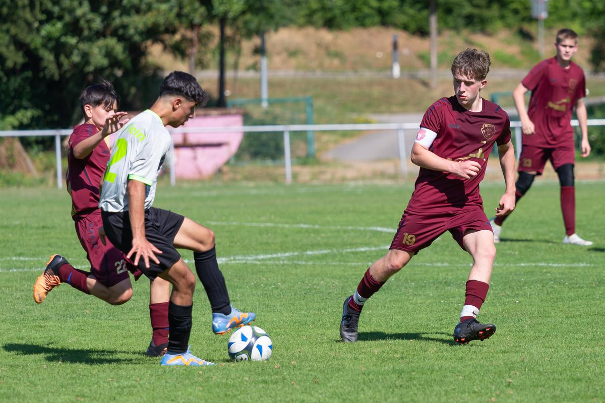
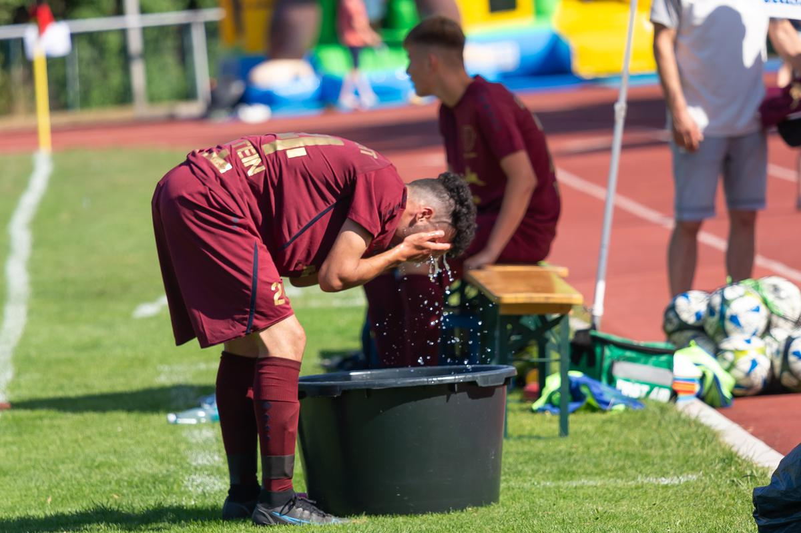

TGV Jubiläum Fußballspiel - TGV 200 Jahr Feier
SGM ABI B1-Junioren gegen TV Flein — 1:2
Es war angerichtet 200 Jahre TGV Eintracht Beilstein, und zum Sportwochenende gehört dann halt auch ein Fußballspiel dazu. Mit dem TV Flein der auch schon 125 Jahre alt ist, haben wir für diesen Event einen großartigen Partner gefunden.
So wurde am Sonntag bei über 30 Grad ein Spiel unserer B Jugendteams ausgetragen SGM-ABI(TGV Beilstein ist ein, wenn nicht der wichtigste Teil dieser Jugendkooperation) gegen den TV Flein.
Auch war es so, dass beide Vereine diese Woche ihrer jüngeren Spieler aus der C Jugend integriert haben sowie ihre älteren Spieler in die A Jugend abgegeben hatten.
Somit hatten beide Teams erst zwei Trainingseinheiten in der neuen Konstellation. Und trotz dieser Voraussetzung entwickelte sich ein fulminates Spiel. Denn beide Teams waren absolut auf offensive ausgerichtet. In Halbzeit 1 hatte die SGM-ABI eine Überzahl an Torchancen erspielt, ging auch verdient mit 1:0 in Führung. Durch einen Freistoß konnte der TV Flein noch vor der Pause ausgleichen.
In Halbzeit 2 merkte man ab der 60 Minute vielen Spielern an das die Hitze nun doch auch an die Substanz ging. Somit wurde mehr gewechselt, und vielleicht auch hieraus resultierte das 1:2 für Flein.
Am Ende war es absolut ein Spiel auf Augenhöhe. Für die Jungs der SGM-ABI war es auch etwas Besonderes, durften Sie zu diesem Spiel die TGV 200 Jahre Jubiläumstrikots der Aktiven Mannschaft des TGV tragen.
Vielen Dank an den TV Flein das Ihr heute mit dabei gewesen seid. Und auch ein großes Kompliment an das Schiedsrichtergespann, das ein intensives Spiel super geleitet hat.
In unserem Team waren: Albi, Alpay, Batuhan, Jaris,Marvin, Paul, Robin, Jonas, Joris, Kay, Lucas, Omar, Peter, Talik, Christian, Tugra.
Alle weiteren Fotos zum Spiel: Google Photo